▲ 산림박람회가 열리는 청주 생명누리공원(상시 공원 사진, 박람회 모습 아님) 사진=한국관광공사
10월 셋째 주말인 16~18일, 충북에서는 두 행사가 겹친다. 청주 생명누리공원 일원에서 열리는 2026 대한민국 산림박람회와 영동 용두공원에서 열리는 충청북도 정원박람회 in 영동이다. 두 곳의 직선거리는 한국관광공사 행사 정보에 등록된 좌표로 계산하면 약 63km(63.2km)다. 하루에 묶을 수 있을지, 아니면 이틀로 나눠야 할지가 이 글의 질문이다. 먼저 밝혀 둘 점이 있다. 정원박람회 시작일은 충청매일 보도(10월 14~18일)와 한국관광공사 행사 정보(10월 15~18일)가 서로 다르다. 이 글은 두 일정을 모두 표기했고, 어느 쪽이 맞는지는 공식 홈페이지 확인이 필요하다(10월 4일 재조회 기준 한국관광공사 행사 정보는 여전히 15일 시작이고, 14일 시작을 확인해 주는 공식 공지는 찾지 못했다). 주차장 위치와 수용 대수, 셔틀 운행 여부는 확인하지 못했다. 그 항목은 "방문 전 공식 공지 확인"으로 표시했다.
1. 한눈에 보기 — 두 행사 비교
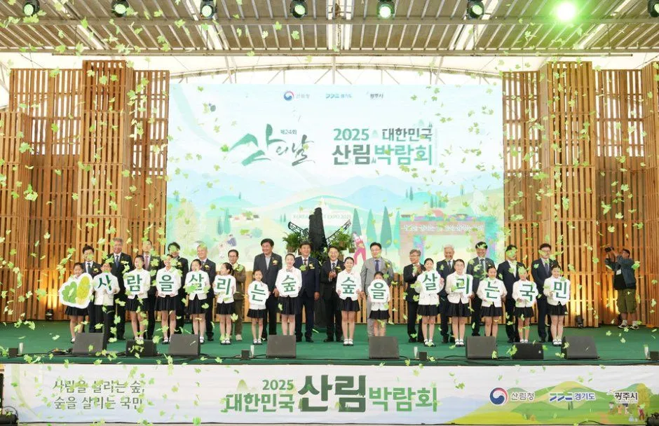
▲ 지난해(2025) 대한민국 산림박람회 개막식. 한국관광공사 제공 과거 행사 사진으로, 올해 행사와 다를 수 있다. 사진=한국관광공사
두 행사 모두 입장은 무료로 안내돼 있다(한국관광공사 행사 정보 기준). 운영 시간은 산림박람회가 10:00~20:00(부스 운영 10:00~18:00), 정원박람회가 09:00~18:00이다. 따라서 하루에 두 곳을 모두 보려면 시간이 빠듯하다. 특히 산림박람회의 불꽃놀이와 저녁 프로그램을 보려면 같은 날 영동 일정은 포기하는 편이 현실적이다(불꽃놀이 날짜는 확인하지 못했다).
| 구분 | 대한민국 산림박람회 | 충청북도 정원박람회 in 영동 |
|---|---|---|
| 일정 | 10월 16일(금)~18일(일), 3일 | 한국관광공사: 10월 15일(목)~18일(일) / 충청매일: 10월 14~18일 → 공식 홈페이지 확인 필요 |
| 장소 | 청주시 생명누리공원 일원(주소 청주시 청원구 밀레니엄1로 18, 한국관광공사 행사 정보 기준) | 영동군 영동읍 용두공원로 42, 용두공원(한국관광공사 행사 정보 기준) |
| 운영 시간 | 10:00~20:00, 부스 10:00~18:00 | 09:00~18:00 |
| 입장료 | 무료(한국관광공사 행사 정보 기준) | 무료(한국관광공사 행사 정보 기준) |
| 주최 | 산림청·충청북도·청주시(헤럴드경제 보도 기준) | 충청북도, 영동군 |
| 문의 | 산림청 043-201-2312 | 충청북도 043-212-7893 |
| 성격 | 산림 정책·산업 전시, 체험, 공연, 불꽃놀이 | 정원 전시·산업전·체험, 국악 연계 공연 |
| 병행 행사 | 충북 공예페어, 임산물 판매 부스 | 영동난계국악축제(10월 15~18일, 레인보우힐링광장 일원) |
| 주차장·셔틀 | 확인하지 못함, 방문 전 공식 공지 확인 | 확인하지 못함, 방문 전 공식 공지 확인 |
ℹ️ 정원박람회 시작일이 출처마다 다르다
충청매일은 "10월 14~18일", 한국관광공사 행사 정보(영동난계국악축제와 같은 기간으로 설명)는 "10월 15~18일"로 안내한다. 14일은 사전 공개나 준비일일 가능성이 있으나 확인하지 못했다. 이 글의 코스는 두 일정이 모두 포함되는 16~18일 기준이다. 15일 이전에 가려면 반드시 공식 공지를 먼저 확인하자.
2. 대한민국 산림박람회 — 청주 생명누리공원
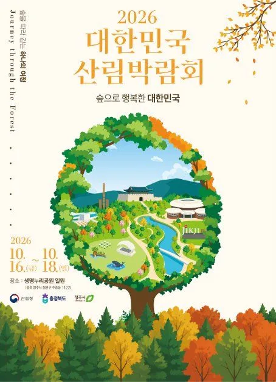
▲ 2026 대한민국 산림박람회 공식 포스터. 포스터에도 10월 16~18일이 적혀 있다(한국관광공사 제공 이미지). 포스터=주최 측(한국관광공사 제공)
한국관광공사 행사 정보에 따르면 산림박람회는 산림의 가치와 정책, 산업을 한자리에서 소개하는 행사다. 청주 최대 규모 불꽃놀이가 예고돼 있고, 목공·산림치유·반려식물 체험, 임산물 판매 부스, 충북 공예페어도 열린다. 일자별 주요 프로그램은 아래와 같다. 세부 시간표는 확인하지 못했다. 헤럴드경제는 이 행사를 "20만 명 이상이 방문하는 국내 최대 규모의 산림분야 행사"로 소개했다. 올해 청주 행사의 방문객 예측은 아니지만, 혼잡 가능성을 가늠하는 참고가 된다. 주최는 산림청·충청북도·청주시이며 예산은 약 6억 원으로 보도됐다.
| 날짜 | 주요 프로그램 |
|---|---|
| 10월 16일(금) | 산림경영 현장사례관, 개막식 및 산의 날 기념식, 문화·예술 공연 |
| 10월 17일(토) | Forest Youth 포럼, 문화·예술 공연 |
| 10월 18일(일) | 산림골든벨, 문화·예술 공연, 음악콘서트 "가을소풍", 폐막 프로그램 |
| 기간 중 | 임산물 판매 부스, 유관기관 홍보 부스, 산림 체험 부스, 충북 공예페어, TFS 텐트 전시 |
개막식은 금요일이라 방문객이 가장 많은 날은 토요일(17일)로 보는 편이 자연스럽다. 다만 일자별 방문객 수 예측은 공식 발표가 없어 추정이다. 불꽃놀이 날짜와 시간은 확인하지 못했다.
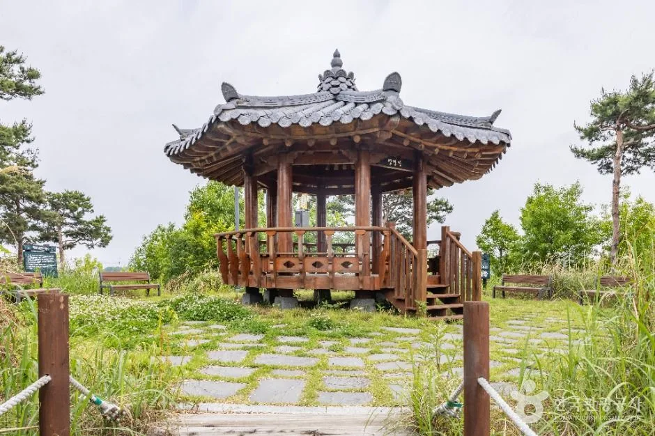
▲ 공원 안 정자와 산책로. 박람회 때 모습과는 다를 수 있다(한국관광공사 사진). 사진=한국관광공사
박람회 전후로 산을 더 보고 싶다면 산림청이 발표한 2026 가을 단풍 절정 시기 지도를 먼저 확인하자.
공식 안내는 산림청과 청주시 채널에서 확인할 수 있다. 청주 산림박람회 공식 인스타그램 바로가기
3. 충청북도 정원박람회 in 영동 — 용두공원
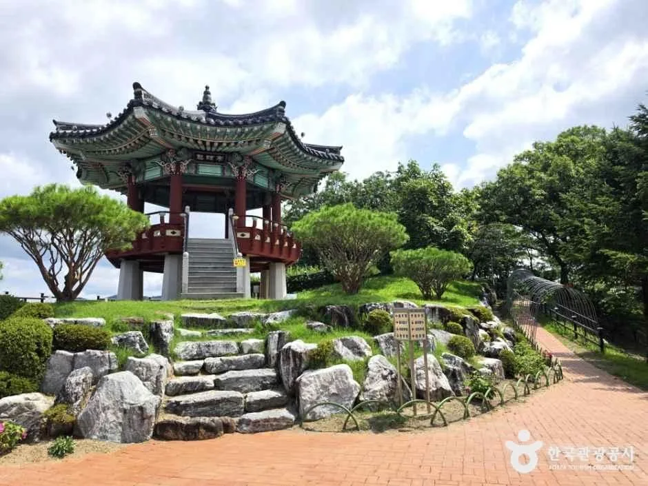
▲ 영동 용두공원의 정자. 영동읍 시가지를 내려다보는 언덕에 자리한다(한국관광공사 사진). 사진=한국관광공사
제2회 행사로, 제천에서 열린 지난해 행사에 이어 올해 영동에서 열린다. 보도와 한국관광공사 행사 정보에 따르면 정원산업전, 정원체험존, 프리마켓존, 정원문화공연으로 구성되고, 도민·군민 참여 정원을 사전 공모로 선정해 행사장을 꾸민다. 부대 프로그램으로는 인형탈 이벤트, 드레스코드 이벤트, 보물찾기, 버블쇼, 정원식물 이름맞추기 등이 안내됐다.
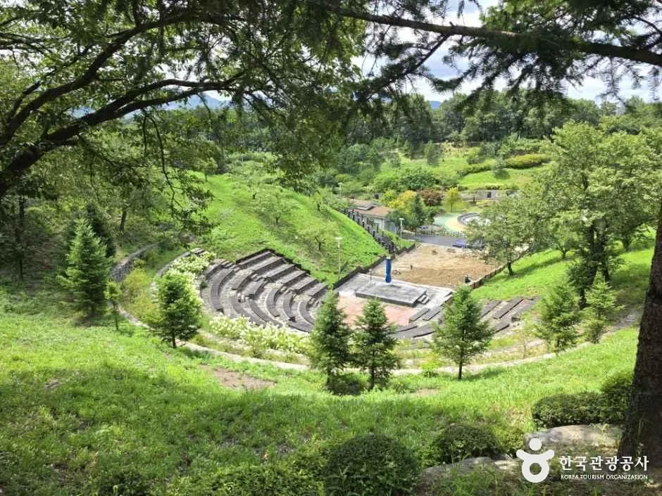
▲ 용두공원 안 계단식 야외 무대 터. 정원문화공연이 어디서 열리는지는 확인하지 못했다(한국관광공사 사진). 사진=한국관광공사
주제는 "꽃피고 가락 흐르는 정원"이다. 영동난계국악축제와 같은 기간이고 두 행사장이 1km 이내라는 보도가 있고, 좌표로 계산한 두 행사장 사이 직선거리는 약 1.3km다. 영동에 도착하면 걸어서 두 행사를 이어 볼 수 있을 가능성이 크다(도보 15~20분 내외, 추정). 난계국악축제는 영동 레인보우힐링광장 일원(영동읍 영동힐링로 117)에서 10월 15~18일 열리고 운영 시간은 10:00~20:00다. 일부 체험은 유료(5,000~15,000원)로 안내됐다.
| 항목 | 정원박람회 | 영동난계국악축제 |
|---|---|---|
| 장소 | 용두공원(용두공원로 42) | 레인보우힐링광장 일원(영동힐링로 117) |
| 일정 | 10월 15~18일(한국관광공사 행사 정보) / 14~18일(충청매일) | 10월 15~18일 |
| 시간 | 09:00~18:00 | 10:00~20:00 |
| 요금 | 무료 | 무료, 일부 체험 5,000~15,000원 |
| 주요 내용 | 정원 전시, 산업전, 체험, 프리마켓, 공연 | 개막·폐막식, 국악·퓨전국악·세계민속춤 공연, 추풍령가요제, 한복체험 등 |
| 문의 | 043-212-7893 | 043-745-8917 |
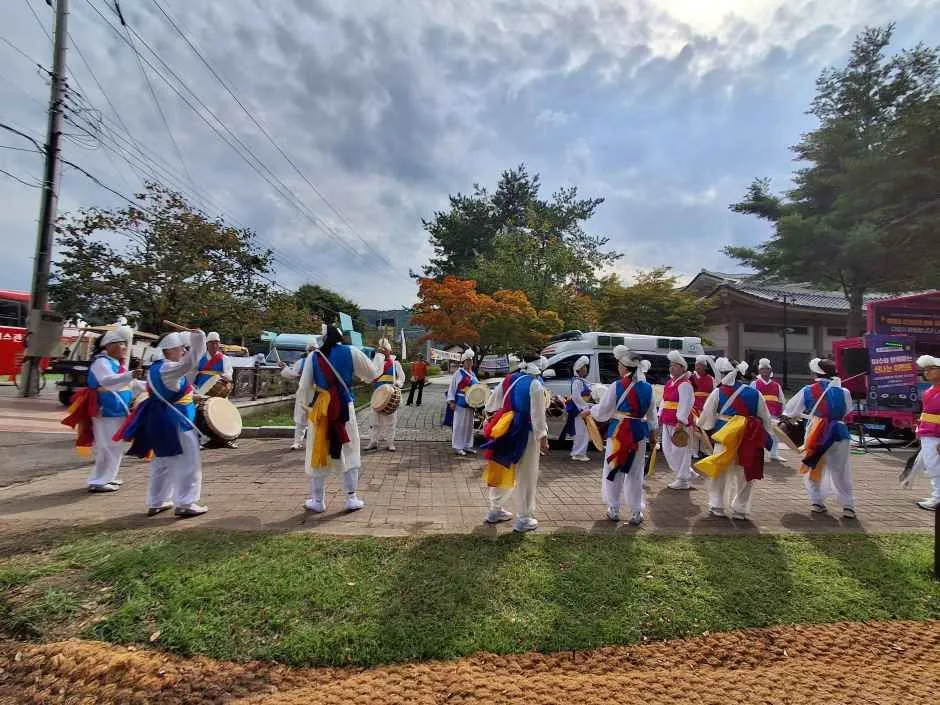
▲ 영동난계국악축제 농악 공연. 한국관광공사 제공 과거 행사 사진으로, 올해 행사와 다를 수 있다. 사진=한국관광공사
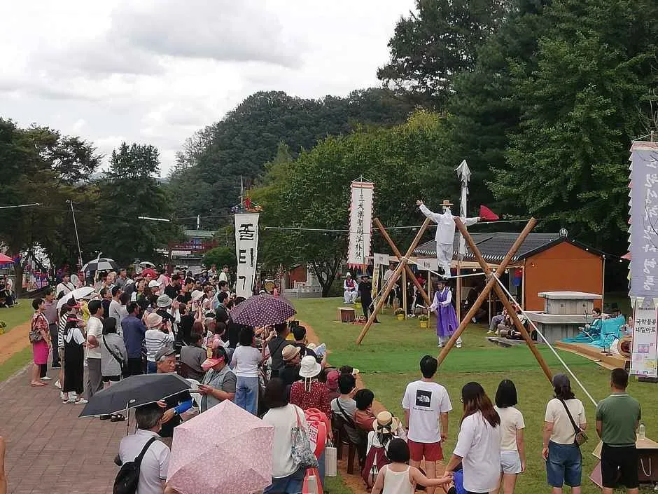
▲ 영동난계국악축제 체험 행사장. 우산을 쓴 관람객이 보이는 과거 행사 사진으로, 올해와 다를 수 있다. 사진=한국관광공사
▲ 영동난계국악축제 무대 공연. 한국관광공사 제공 과거 행사 사진으로, 올해 행사와 다를 수 있다. 사진=한국관광공사
4. 두 곳 이동 — 거리와 경로
한국관광공사 행사 정보 좌표로 계산한 두 행사장의 직선거리는 약 63km다. 도로 거리와 소요 시간은 공식 자료에서 확인하지 못했다. 청주에서 영동까지는 고속도로로 이어지는 경로가 일반적이지만, 정확한 경로와 시간은 출발 직전 내비 실시간 안내로 확인하는 편이 안전하다. 직선거리를 기준으로 하면 막히지 않을 때 1시간 내외, 정체가 겹치면 1시간 20분 안팎까지 걸릴 것으로 보인다. 이는 추정치이고 행사 기간 정체는 반영하지 못했다.
| 항목 | 내용 | 확인 상태 |
|---|---|---|
| 청주 행사장 내비 | 청주시 청원구 밀레니엄1로 18(생명누리공원) | 한국관광공사 행사 정보 기준 |
| 영동 행사장 내비 | 영동군 영동읍 용두공원로 42(용두공원) | 한국관광공사 행사 정보 기준 |
| 직선거리 | 약 63km(63.2km, 좌표 계산) | 한국관광공사 행사 정보 좌표로 계산 |
| 도로거리·소요 시간 | 내비 확인 필요, 1시간 내외~1시간 20분(추정, 행사 기간 정체 미반영) | 공식 자료 없음 |
| 통행료 | 확인하지 못함, 경로에 따라 다름 | 내비에서 확인 |
| 교통통제 | 확인하지 못함 | 방문 전 공식 공지 확인 |
이동 시간대는 특히 신경 쓸 점이다. 일요일 오후 귀경길과 겹치면 정체 가능성이 커진다. 가을 주말 고속도로 시간대별 흐름은 가을 고속도로 혼잡 시간대 데이터를 참고하면 도움이 된다.
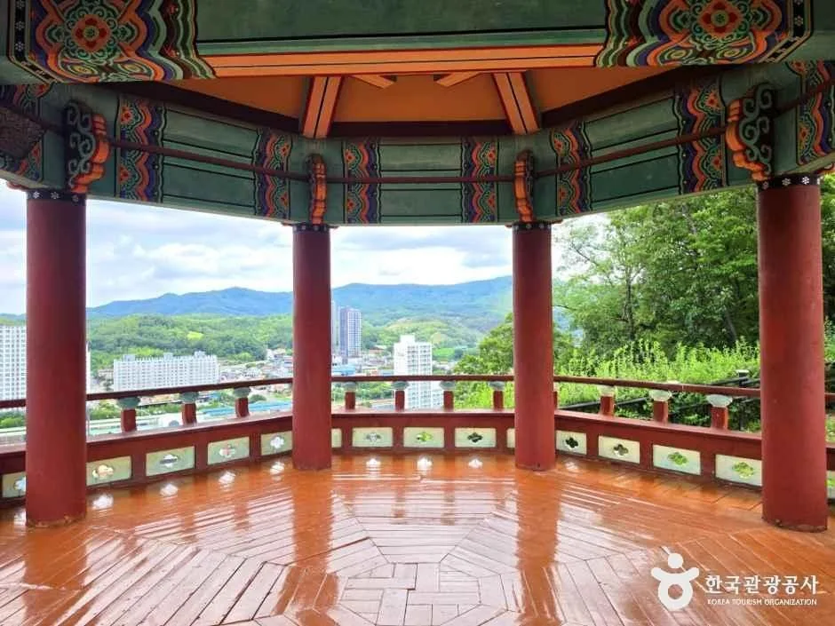
▲ 용두공원 정자에서 보이는 영동읍 풍경(한국관광공사 사진). 사진=한국관광공사
5. 하루 코스 vs 이틀 코스
한 번에 두 곳을 보려면 시간을 어떻게 나눌지가 핵심이다. 아래는 확인된 운영 시간(산림박람회 부스 10~18시, 정원박람회 9~18시)만을 근거로 한 제안이며, 소요 시간은 추정이다.
| 구분 | 하루 코스 | 이틀 코스 |
|---|---|---|
| 구성 | 오전 청주 → 낮 이동 → 오후 영동 | 1일차 청주, 2일차 영동(또는 반대) |
| 추천 날짜 | 17일(토) 또는 18일(일) | 17~18일 연이어 |
| 청주 체류 | 10:00~13:00 안팎(부스·체험 위주) | 10:00~18:00 전체(운영 20시까지, 불꽃놀이 날짜 확인 후 청주 일자 선택) |
| 이동 | 13:00 전후 출발, 1시간 내외~1시간 20분(추정, 행사 기간 정체 미반영) | 숙박지에서 아침 이동 |
| 영동 체류 | 14:30~18:00, 정원박람회 폐장 직전까지 | 09:00부터, 난계국악축제와 병행 |
| 장점 | 당일 해결 | 주차 혼잡 시간대를 피해 일찍 도착, 난계국악축제 20시까지 운영(저녁 시간대 연계 가능) |
| 단점 | 두 곳 모두 충분히 보기 어려움, 일요일 오후 귀경 정체 위험 | 숙박비 부담 |
| 놓치는 것 | 산림박람회 불꽃놀이 같은 저녁 프로그램(날짜·시간 미확인) | 불꽃놀이 날짜 확인 후 청주 일자 선택(날짜 미확인) |
✅ 코스 선택 요령
· 하루로 끝낼 땐 토요일 오전 청주, 오후 영동 순서를 추천한다. 정원박람회가 18시에 끝나므로 영동을 먼저 가면 청주 쪽이 늦어진다
· 일요일(18일)은 두 행사의 폐막일이므로 폐막 프로그램이 몰려 혼잡할 수 있다(추정)
· 이틀 코스는 숙박지를 영동이나 청주로 정하면 이동이 줄어든다
· 영동난계국악축제는 20시까지 운영하므로 정원박람회가 끝난 뒤 이어 볼 수 있다
6. 주차와 혼잡 시간대 — 자차 팁
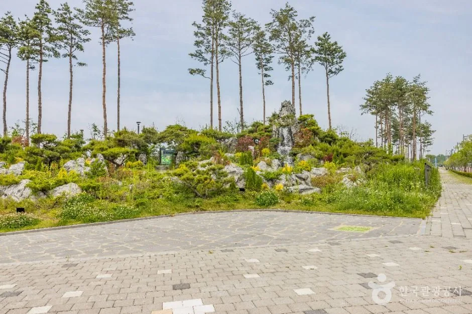
▲ 공원 조경 정원과 산책로. 박람회 때는 부스 배치로 모습이 달라질 수 있다(한국관광공사 사진). 사진=한국관광공사
두 행사 모두 주차장 위치, 수용 대수, 요금, 셔틀 운행 여부를 확인하지 못했다. 방문 전 청주 산림박람회 공식 채널과 충북도·영동군 공지를 확인하자. 대신 일반적으로 쓸 수 있는 원칙은 아래와 같다.
| 행사 | 예상 혼잡 | 근거 |
|---|---|---|
| 산림박람회 | 16일 개막식 시간대, 17일 토요일 낮, 18일 "가을소풍" 콘서트 시간대 | 개막·콘서트 프로그램 일정(시간대는 미확인), 헤럴드경제 "20만 명 이상 방문 규모" 보도 |
| 정원박람회·난계국악축제 | 주말 낮 시간대, 정원박람회 폐장 전후 | 두 행사장이 1~1.3km 거리라 인파가 겹칠 수 있음 |
| 귀경 시간 | 일요일 오후 | 일반적 주말 패턴 |
- 두 행사 모두 개막 시간 전에 도착하는 쪽이 주차에 유리하다(일반 원칙).
- 청주 행사장 내비 목적지는 "생명누리공원"(청원구 밀레니엄1로 18)이다. 한국관광공사 관광지 정보상 이 공원은 연중무휴 상시 개방이고, 공원 안 고래물놀이터는 월요일·우천 시 휴장하며 회차제(10:00·13:00·15:00 시작, 회당 200명)로 운영된다고 한다. 박람회 기간에 물놀이터가 운영되는지는 확인하지 못했다.
- 우천 시 박람회 운영 변경이나 우천 대비 안내는 확인하지 못했다. 야외 행사이므로 우산·우비와 갈아 신을 신발을 차에 준비해 두자.
- 영동 시가지에서는 두 행사가 가까워 도착 후 한 번 주차하고 걸어서 이동하는 방안을 고려한다. 실제 가능 여부는 현장 안내를 확인하자.
- 청주 쪽 진입 도로 정체 여부와 우회로는 내비 실시간 정보로 확인한다.
▲ 영동난계국악축제 행렬 사진. 한국관광공사 제공 과거 행사 사진으로, 올해 행사와 다를 수 있다. 사진=한국관광공사
7. 영동에서 더 머문다면
영동에서 시간이 남는다면 단풍 시기와 겹치는 월류봉 둘레길이 있다. 자세한 접근과 시기는 영동 월류봉 둘레길 가을 가이드에 정리했다. 청주에서 돌아오는 길에 호수 경관을 보고 싶다면 옥천 부소담악 가는 법과 주차 팁도 참고할 만하다.
영동에서 일정이 남는다면 행사장에서 가까운 영동 와인터널과, 청주에서 돌아오는 길에 들를 수 있는 상당산성을 묶는 방법도 있다. 아래는 한국관광공사 관광지 정보 기준이며 행사 기간 운영 변경은 확인하지 못했다.
| 장소 | 주소(내비) | 운영·휴무 | 주차·문의 | 행사장과의 거리(직선, 좌표 계산) |
|---|---|---|---|---|
| 영동 와인터널 | 영동군 영동읍 영동힐링로 30 | 10:00~18:00(매표 마감 18:00), 매주 월요일 휴관(공휴일이면 다음 날) | 주차 가능, 043-740-3636~7 | 용두공원 약 0.9km, 난계국악축제 광장 약 0.6km |
| 청주 상당산성 | 청주시 상당구 성내로 70 | 상시 개방, 연중무휴 | 주차 가능, 043-201-0202 | 생명누리공원 약 5.5km |
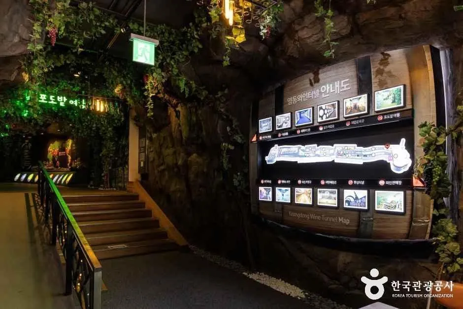
▲ 영동 와인터널 내부의 오크통 전시벽. 한국관광공사 제공 상시 관광지 사진으로 행사와는 무관하다. 사진=한국관광공사
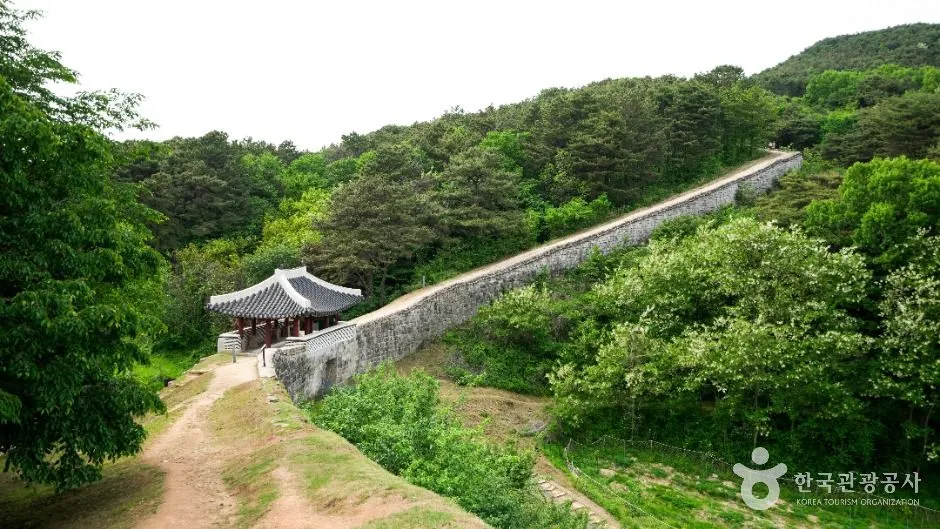
▲ 청주 상당산성의 성곽. 한국관광공사 제공 상시 관광지 사진으로 행사와는 무관하다. 사진=한국관광공사
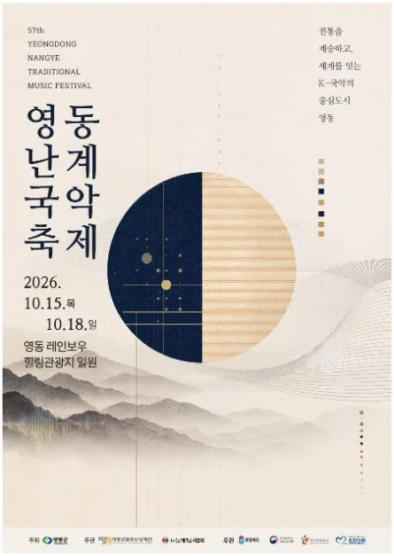
▲ 2026 영동난계국악축제 포스터. 10월 15~18일로 표기돼 있다(한국관광공사 제공 이미지). 포스터=주최 측(한국관광공사 제공)
영동난계국악축제 공식 안내는 홈페이지에서 확인할 수 있다. 영동난계국악축제 공식 홈페이지 바로가기
✅ 출발 전 체크리스트
· 산림박람회: 10/16~18, 청주 생명누리공원(청원구 밀레니엄1로 18), 10~20시, 무료
· 정원박람회: 영동 용두공원, 10/15~18(한국관광공사 행사 정보) 또는 10/14~18(충청매일), 9~18시, 무료
· 난계국악축제: 10/15~18, 레인보우힐링광장, 10~20시
· 직선거리 약 63km, 도로 소요 시간은 내비 확인
· 주차장·셔틀·교통통제·불꽃놀이 시간은 방문 전 공식 공지 확인
· 문의: 산림청 043-201-2312, 충청북도 043-212-7893
8. 요약
산림박람회는 10월 16~18일 청주 생명누리공원, 정원박람회는 영동 용두공원에서 열리며 두 곳의 직선거리는 약 63km다. 둘 다 입장 무료로 안내됐다. 정원박람회 시작일은 10/15(한국관광공사)와 10/14(충청매일)로 달라 공식 홈페이지 확인이 필요하다.
하루 코스는 토요일 오전 청주, 오후 영동 순서가 현실적이고, 불꽃놀이 같은 저녁 프로그램까지 보려면 이틀로 나누는 편이 낫다. 주차장, 셔틀, 요금, 교통통제와 도로 소요 시간은 확인하지 못했으므로 출발 전 공식 공지와 내비로 확인하자.